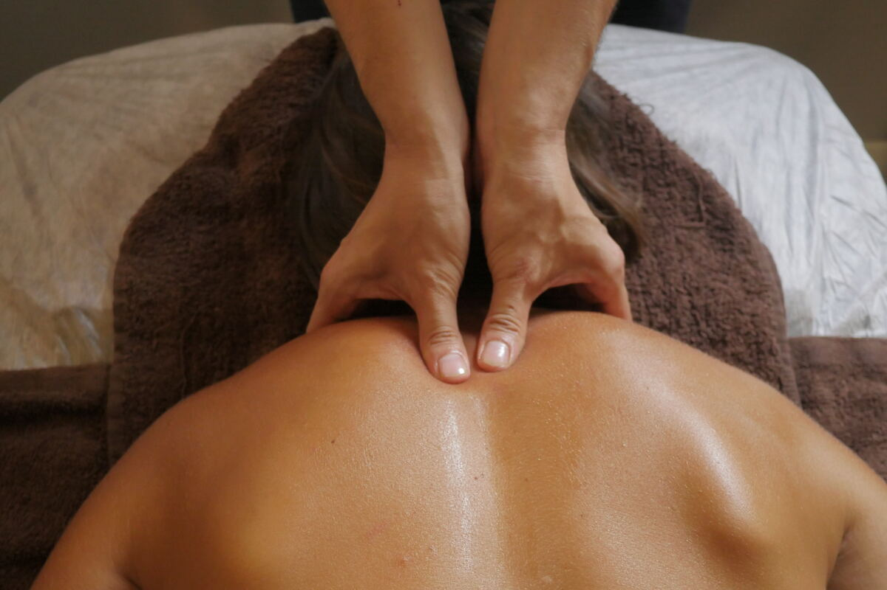

Ritual holístico milenario · Barcelona
Masaje ayurveda a domicilio en Barcelona
La terapia relajante en casa más transformadora. El masaje ayurveda lleva a tu sofá o cama la sabiduría de la medicina india milenaria: aceites herbales calientes, movimientos rítmicos y un efecto purificador que notarás desde la primera sesión.
¿Qué es el Ayurveda y por qué funciona?
Ayurveda significa «ciencia de la vida» en sánscrito. Este masaje utiliza aceites herbales calentados y movimientos rítmicos que trabajan a la vez el cuerpo físico y el sistema nervioso:
- Elimina toxinas (Ama) mediante el calor y la presión rítmica profunda
- Nutre los tejidos con aceites penetrantes de sésamo y hierbas medicinales
- Regula el sistema nervioso: la terapia relajante en casa más efectiva contra el estrés crónico
- Mejora la calidad del sueño desde la primera sesión
- Activa la circulación linfática y venosa de forma natural, sin aparatos
- Equilibra los tres doshas: Vata, Pitta y Kapha para un bienestar duradero
El protocolo Abhyanga en tu hogar
Aceites calentados al punto exacto
Temperatura ideal para máxima penetración sin riesgo. Aceites de sésamo y coco con hierbas.
Movimientos sincronizados
Técnica de cuatro manos opcional para estimular el sistema nervioso parasimpático.
Marmas: puntos de energía
Trabajo sobre los 107 puntos marma para equilibrar el flujo energético vital.
Sin sorpresas
Tarifas transparentes
Reserva rápida
Elige zona y día, y te respondo
Reserva tu masaje ayurveda
Te respondo por WhatsAppPago al terminar la sesión, en efectivo o Bizum. Cancelación gratis hasta 24 h antes.
Preguntas sobre el masaje ayurveda
¿Necesito alguna preparación previa?
¿Qué ropa necesito usar?
¿Para quién es especialmente beneficioso?


Pon en pausa el mundo durante 75 minutos
Un ritual Ayurveda auténtico, en tu salón, sin desplazamientos ni esperas.
Reservar masaje ayurveda